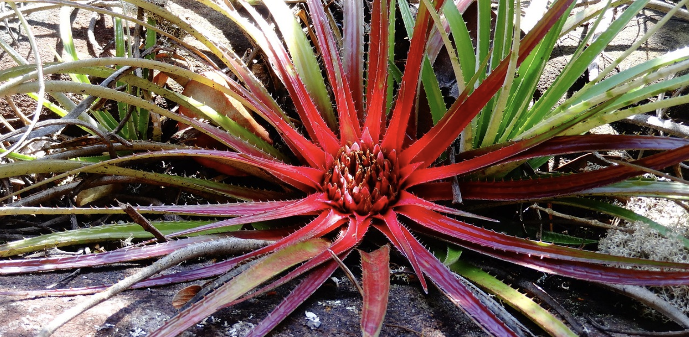

"We are fascinated by the recent rise in popularity of houseplant collecting, and in particular the phenomenon of rare houseplants changing hands for large sums of money. So we have turned to the expert mind of Jane Perrone, garden writer, podcast host and houseplant guru, to discover more on this topic. Here Jane takes a fascinating look into the pertinent themes surrounding rare houseplants and the impact of seeking the desirable."
I bought a rare plant this week. It wasn’t one of those specimens you’ll see lauded on Instagram emblazoned with #unicornplant, such as a Philodendron ‘Spiritus Sancti’ or a variegated fan palm: my budget won’t run to a four-figure houseplant bill.
No, my rare plant cost me £7. It’s a cultivar of the strawberry saxifrage, Saxifraga stolonifera, collected in Japan by Cedric Basset of French nursery Aoba, an Asian plant specialist. ‘Nezu Jinja’ is named after a shrine in Tokyo, and has unusually large leaves for the species, traced in silver, as well as the habit of reproducing by means of stolons tipped with baby plants. It is only sold by one British nursery I know of, Growild, growildnursery.co.uk and they only had a few plants for sale.
So why can I pick up this rare houseplant for a few quid while similarly scarce rare aroids will be listed for hundreds of pounds?
Like all businesses, the houseplant industry is driven by supply and demand. While my ‘Nezu Jinja’ is rare - you won’t see one in B&Q or IKEA any time soon - demand is not high for this species, so the price remains modest.
Houseplant trends are driven by influencers with millions of YouTube subscribers or Instagram followers: when Jamie Song (@jamies_jungle on Instagram) or Kaylee Ellen shows off a rare philodendron or Monstera, every one of their fans starts scouring the internet to find out where they can lay their hands on this must-have plant. But such thirst cannot be met instantly: it can take months if not years to propagate enough plants to meet a surge of demand for a particular species or cultivar, especially slower-growing variegated ones. Some can be grown from seed, but this can be hard to source: others can only be propagated from plant material, either in traditional manner or via tissue culture, but again, the source material can be scarce and expensive.
